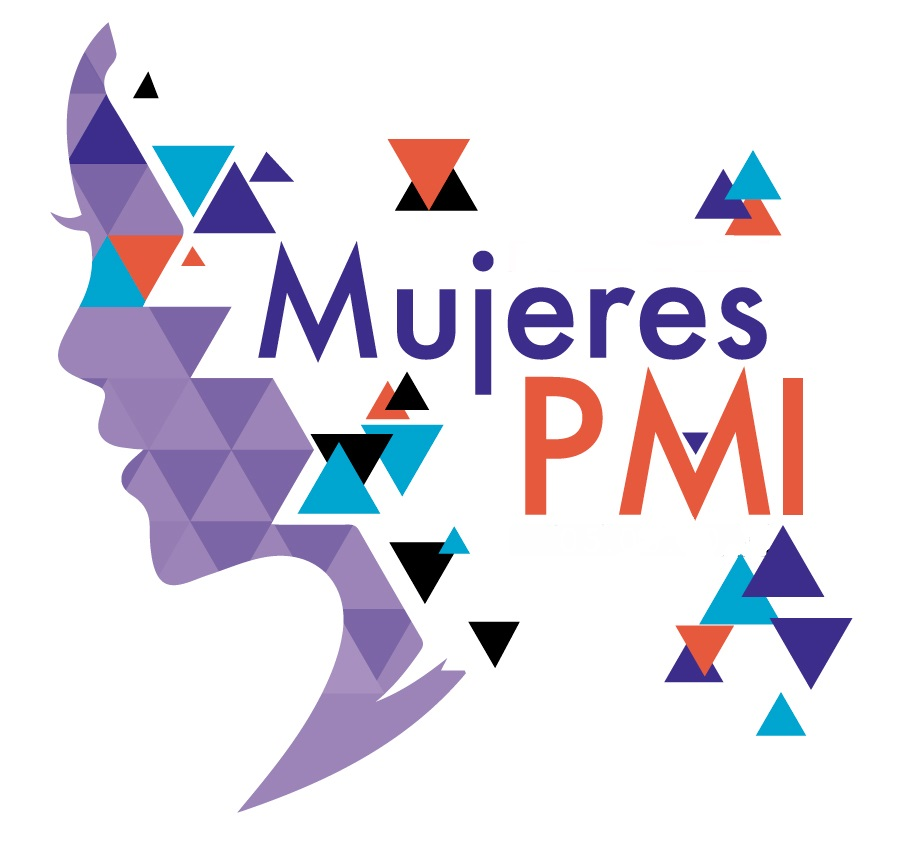

Explora cómo el PMI puede ayudarte a convertir tus ideas en proyectos reales y exitosos.

Estan comprometidos con avanzar en la profesión de gestión del proyecto
MISION
Nuestra misión es proporcionar a los profesionales del proyecto y a los empleadores plataformas y recursos de conocimiento,
aprendizaje y desarrollo de carreras y certificaciones profesionales estándar de oro.
VISION
Nuestra visión es ser la autoridad líder y la comunidad global para el éxito de los proyectos, avanzando en un mundo en el
que cada proyecto sea responsable de un valor máximo.
¿Qué es el PMI?
El Project Management Institute (PMI) es una organización global dedicada a mejorar y estandarizar la gestión de proyectos.
Ayuda a las personas a transformar sus ideas en proyectos exitosos.
¿Cual es el proposito del PMI?
Nuestro propósito es más que una declaración. Es nuestra razón de ser y la fuerza que guía todo lo que hacemos. El mundo necesita más proyectos para tener éxito. Necesitamos Project Professionals para impulsar la implementación exitosa de proyectos críticos y creemos que tenemos la capacidad única de impactar nuestro mundo a través del éxito de los proyectos.
¿Cómo funciona?
El PMI se enfoca en una metodología llamada PMBOK, que incluye pasos para definir, planificar y cerrar proyectos con éxito. Es como una receta que te guía paso a paso para alcanzar tus metas.
¿Que es y para que sirve?
En esta seccion podra ver un video donde se explica mas a detalle
Te preguntaras ¿para que sirve la gestion de proyectos?
Beneficios para tu vida diaria
La gestión de proyectos no es solo para empresas;
¡la puedes aplicar en tu vida diaria! Por ejemplo:
Planificación de estudios: ¿Tienes exámenes? Organiza tus estudios en un cronograma.
Organización de eventos: Planea una fiesta o evento con amigos,
cuidando detalles como presupuesto, invitados y actividades.
Tus metas personales: ¿Quieres aprender algo nuevo o ahorrar para algo especial?
La gestión de proyectos te da las herramientas para organizarte y lograrlo.
¿Dónde se aplica el PMI? ¡En todos lados!
Estos principios se usan en todos los campos:
Tecnología: Crear apps, videojuegos o plataformas.
Salud: Planificar mejoras en hospitales.
Educación: Desarrollar programas y currículos.
Medio ambiente: Implementar proyectos para cuidar nuestro planeta.
La Gestión de Riesgos para Mujeres en la Gerencia de Proyectos
Las mujeres en la gerencia de proyectos a menudo navegan en entornos desafiantes que requieren habilidades especiales para identificar y mitigar riesgos.
Estos retos pueden incluir desde liderar equipos diversos hasta manejar conflictos y expectativas bajo presión. La gestión de riesgos no solo ayuda a anticipar problemas,
sino que también fortalece la resiliencia y la toma de decisiones estratégicas.
En el siguiente video, descubrirás conceptos clave para identificar y gestionar los riesgos de proyectos, una habilidad esencial para quienes aspiran a ser líderes efectivas en sus organizaciones.
La explicación clara y los ejemplos prácticos presentados en este recurso te ayudarán a construir un enfoque sólido y confiable en la gestión de riesgos.
Mujeres en la Gestión de Proyectos
Descubre historias de mujeres líderes en el mundo del PMI, que están rompiendo barreras y liderando proyectos
en áreas de tecnología, ciencia, educación y más. ¡Tú también puedes ser una de ellas!
Michelle LaBrosse
Michelle LaBrosse es una destacada experta en gerencia de proyectos y la fundadora de Cheetah Learning,
una organización especializada en preparar a profesionales para aprobar certificaciones de Project Management Professional (PMP) y mejorar sus habilidades en gestión de proyectos.
Es ingeniera aeronáutica, emprendedora, y pionera en una industria que aún está dominada en gran parte por hombres.
Su método educativo, el "Método Cheetah", enfatiza la rapidez y la eficiencia en el aprendizaje de conceptos de gestión de proyectos,
lo que ha ayudado a miles de personas en todo el mundo a alcanzar sus metas profesionales en tiempo récord.
Gina es presidenta de Abudi Consulting Group, LLC, (ACG),
una pequeña empresa propiedad de mujeres que se centra en ayudar a las organizaciones a asegurar que sus iniciativas de cambio sean un éxito.
Con una carrera de más de 25 años, Gina ha trabajado con empresas de todos los tamaños para implementar programas de gestión de proyectos, capacitar líderes y mejorar la eficiencia organizacional.
Ha sido una gran impulsora de la diversidad en equipos de proyectos y es conocida por su enfoque innovador en resolver problemas complejos de gestión. Gina es también una escritora prolífica y conferencista,
destacada por su habilidad para hacer que los conceptos de gestión de proyectos sean accesibles y prácticos.
Gina Abudí
Karen Tate
Karen Tate es la fundadora y presidenta de The Griffin Tate Group, Inc. (TGTG), una empresa líder en capacitación y consultoría en gestión de proyectos,
reconocida por sus programas prácticos en metodologías de Project Management. A través de TGTG, Karen ha trabajado con grandes corporaciones globales en sectores como manufactura,
salud, energía y finanzas, desarrollando técnicas y herramientas interactivas que facilitan a los profesionales aprender y aplicar las mejores prácticas en gerencia de proyectos.
Como figura destacada en la comunidad del Project Management Institute (PMI), Karen ha sido una voluntaria y conferencista activa, contribuyendo al crecimiento y desarrollo de la profesión en todo el mundo.
Su trabajo y liderazgo la convierten en un modelo inspirador, especialmente para jóvenes que desean adentrarse en este campo y ver cómo una carrera en gestión de proyectos puede generar un impacto significativo a nivel global.
Fue la primera mujer en ocupar el cargo de CEO en IBM (International Business Machines Corporation).
Aunque su rol principal fue como directora ejecutiva, Rometty lideró numerosos proyectos estratégicos de transformación digital, innovación y expansión global en IBM, enfocándose en inteligencia artificial,
computación en la nube y big data. Su enfoque en la planificación estratégica y la implementación de tecnologías emergentes ha influido en la dirección de proyectos de transformación digital en muchas industrias.
Virginia "Ginny" Rometty
Karen R.J. White
Directora de "Applied Project Management Solutions," Karen White ha sido líder en el desarrollo de estándares en gerencia de proyectos y miembro activa del Project Management Institute (PMI).
Ha trabajado en proyectos complejos en áreas de tecnología y consultoría, y ha sido fundamental en la creación de metodologías que estandarizan la gestión de proyectos para su aplicación en diferentes industrias.
Fue la primera mujer en ocupar el cargo de CEO en IBM (International Business Machines Corporation).
Aunque su rol principal fue como directora ejecutiva, Rometty lideró numerosos proyectos estratégicos de transformación digital,
innovación y expansión global en IBM, enfocándose en inteligencia artificial, computación en la nube y big data. Su enfoque en la planificación
estratégica y la implementación de tecnologías emergentes ha influido en la dirección de proyectos de transformación digital en muchas industrias.